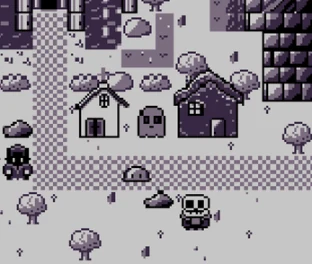
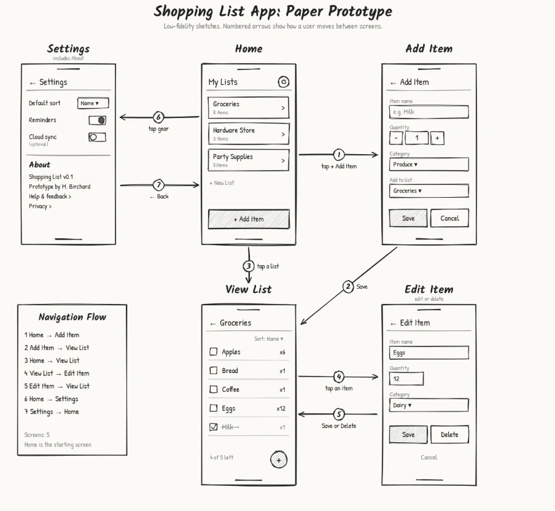

Game UI, designed in Figma, shipped in engine.
I design and build menus, HUDs and game systems in Unity, Godot and TypeScript. By day I build the screens operators use to run solar plants and industrial systems.
Screen Guide: Project Titan
Skirmish HUD, built in Unity uGUI
- 1. Commander portrait
Shows whose turn it is, so the meter always has a face attached.
- 2. Kaiju threat meter
Every kill feeds this shared meter, with a countdown to the Kaiju's arrival. It makes the risk readable at a glance.
- 3. Unit Inspector
Explains the next step in plain words: select an ally, then click a reachable tile.
- 4. Orders
Attack, Hold, Defend and Retreat for the selected unit. They stay greyed until a unit is selected.
- 5. Command seal
Stamped with the faction's emblem. Translucent on hover, full opacity when pressed, lit once every unit has orders.
Hover or focus a numbered entry to find it on the screen.
Chapters
Six projects, each from first sketch to working build.
Argos
A river seen from above as the title menu, and a stopped pocket watch with a field journal as the pause, for a story-led Unity adventure.

Project Titan
Skirmish HUD for an isometric tactical auto battler, from grayscale wireframes to Unity.
Greywater
Menus, HUD and dialogue for a first-person narrative game, with a live title menu you can try.
Midas: The Accursed King
A narrative top-down RPG built inside Game Boy constraints for GBJam 14.

Dreamland Timeline
A searchable, declassified-archive timeline for a fictional world, fed live from a spreadsheet.

UI Explorations
A five-screen mobile app taken from paper sketch to clickable prototype.

Where the habits come from
Operator screens
SCADA and HMI work for solar sites, and controls roles at Microsoft and Amazon: screens people act on in real time, where clutter costs something.
Figma to engine
Wireframes in Figma, then built in Unity uGUI, Godot or TypeScript, so the design accounts for how the engine actually behaves.
State before screens
Map every phase and state first, then draw only the controls a player can actually use in it.